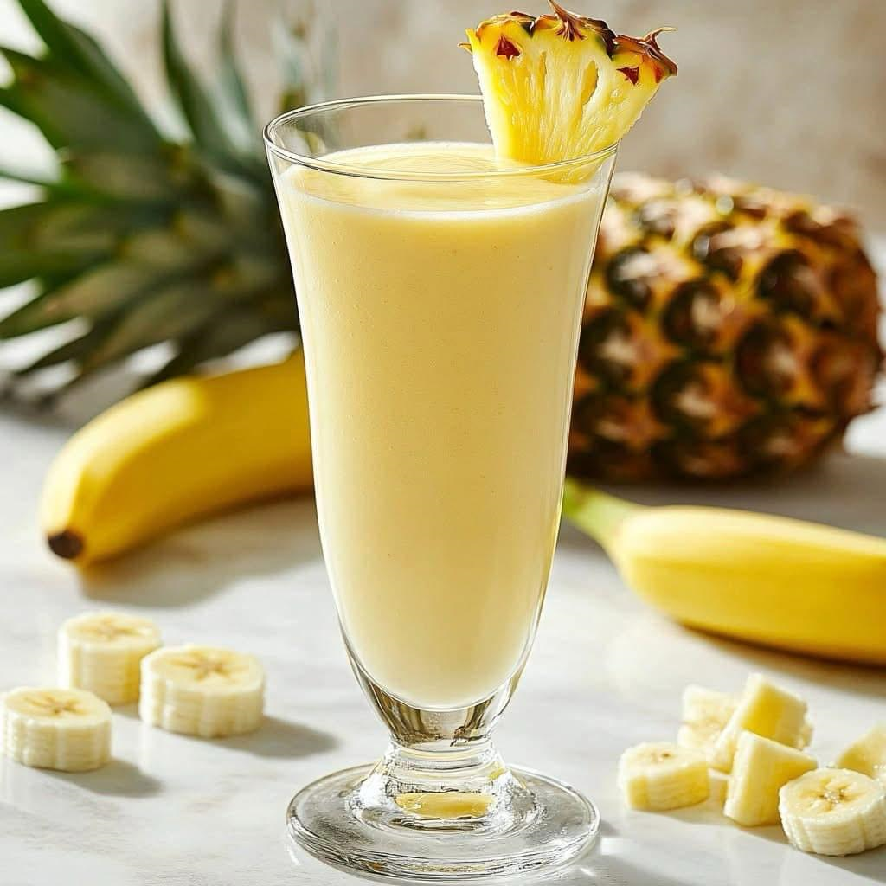
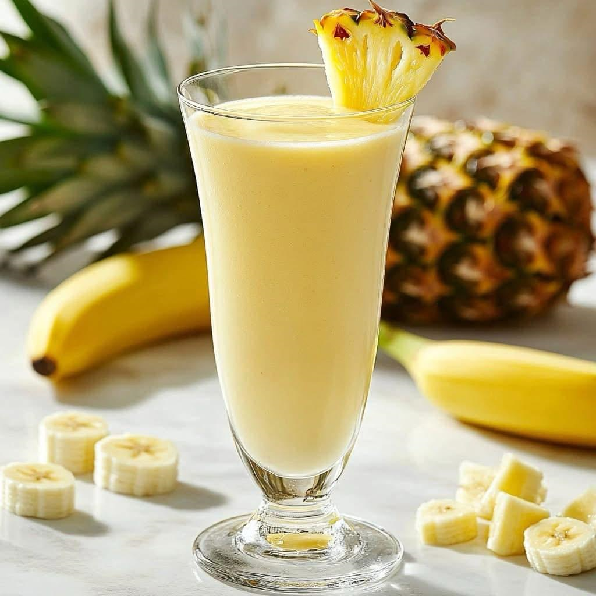

Les 5 bienfaits des smoothies verts

Découvrez pourquoi les smoothies verts sont excellents pour la santé...
Les 5 Bienfaits des Smoothies Verts : Découvrez Pourquoi Ils Sont Excellents pour la Santé Les smoothies verts sont de plus en plus populaires, et ce n’est pas un hasard ! Combinant fruits et légumes à feuilles vertes, ces boissons énergisantes regorgent de nutriments essentiels. Faciles à préparer, savoureuses et rafraîchissantes, elles sont idéales pour une alimentation saine et équilibrée. Découvrez les 5 bienfaits majeurs des smoothies verts et pourquoi vous devriez les intégrer à votre routine quotidienne. ⸻ 1. Un concentré de vitamines et de minéraux Les smoothies verts sont une véritable bombe nutritionnelle ! Grâce aux légumes verts comme les épinards, le chou kale, la laitue ou encore la coriandre, vous bénéficiez d’un apport riche en : ✅ Vitamine A (pour la vision et la santé de la peau) ✅ Vitamine C (pour booster le système immunitaire) ✅ Vitamine K (essentielle pour la coagulation du sang et la santé osseuse) ✅ Fer et magnésium (pour lutter contre la fatigue et améliorer la récupération musculaire) En y ajoutant des fruits comme la banane, la mangue ou l’ananas, vous renforcez encore plus votre apport en vitamines et minéraux, tout en profitant d’une saveur naturellement sucrée. ⸻ 2. Détoxifie naturellement l’organisme Les légumes verts sont riches en chlorophylle, un puissant détoxifiant naturel. La chlorophylle aide à : ✔ Éliminer les toxines accumulées dans le foie ✔ Nettoyer le sang et améliorer l’oxygénation des cellules ✔ Favoriser une digestion plus saine en éliminant les déchets et les métaux lourds En consommant régulièrement des smoothies verts, vous aidez votre corps à se purifier naturellement et à maintenir un bon équilibre interne. ⸻ 3. Un allié pour la digestion et la perte de poids Les smoothies verts sont riches en fibres, ce qui les rend excellents pour la digestion. Les fibres présentes dans les légumes à feuilles et les fruits aident à : ✅ Réguler le transit intestinal et prévenir la constipation ✅ Favoriser une sensation de satiété (idéal pour éviter les fringales) ✅ Équilibrer la flore intestinale, essentielle pour une bonne digestion De plus, ils sont faibles en calories mais riches en nutriments, ce qui en fait un excellent choix pour ceux qui souhaitent perdre du poids sans se priver. Un smoothie vert bien équilibré peut remplacer un repas ou une collation et éviter les excès alimentaires. ⸻ 4. Boostent l’énergie et la concentration Si vous ressentez souvent de la fatigue ou un manque d’énergie, les smoothies verts peuvent être la solution idéale. Grâce à leur richesse en : ✔ Glucides naturels des fruits (source d’énergie immédiate) ✔ Fer et magnésium (pour lutter contre l’épuisement) ✔ Antioxydants qui protègent le cerveau et améliorent la concentration Un smoothie vert le matin ou en collation permet d’éviter les baisses d’énergie et d’améliorer la productivité tout au long de la journée. ⸻ 5. Renforcent le système immunitaire Les smoothies verts sont bourrés d’antioxydants, qui aident à protéger les cellules du corps contre les agressions extérieures (pollution, stress, toxines). Grâce à leur richesse en : ✅ Vitamine C (renforce les défenses naturelles) ✅ Vitamine A et bêta-carotène (protège la peau et les muqueuses) ✅ Propriétés anti-inflammatoires (réduit les risques de maladies chroniques) En intégrant les smoothies verts à votre alimentation, vous renforcez votre immunité et aidez votre corps à mieux résister aux infections et aux maladies. ⸻ Comment préparer un smoothie vert parfait ? Un bon smoothie vert doit être à la fois équilibré, savoureux et nutritif. Voici une recette simple et efficace : Recette de base : Smoothie Vert Énergisant Ingrédients : ✅ 1 poignée d’épinards frais ✅ ½ banane (pour la douceur) ✅ ½ pomme verte (pour une touche acidulée) ✅ 1 tasse d’eau de coco (pour l’hydratation) ✅ ½ jus de citron (pour la vitamine C et la saveur) ✅ 1 cuillère à café de graines de chia ou de lin (pour les oméga-3 et les fibres) Préparation : 1️⃣ Lavez bien tous les ingrédients. 2️⃣ Mettez-les dans un blender. 3️⃣ Mixez jusqu’à obtenir une texture lisse et crémeuse. 4️⃣ Dégustez immédiatement et profitez de tous les bienfaits ! ⸻ Conclusion Les smoothies verts sont une solution simple, rapide et efficace pour prendre soin de votre santé. Riches en vitamines, antioxydants et fibres, ils vous aident à détoxifier votre corps, améliorer votre digestion, renforcer votre immunité et booster votre énergie.